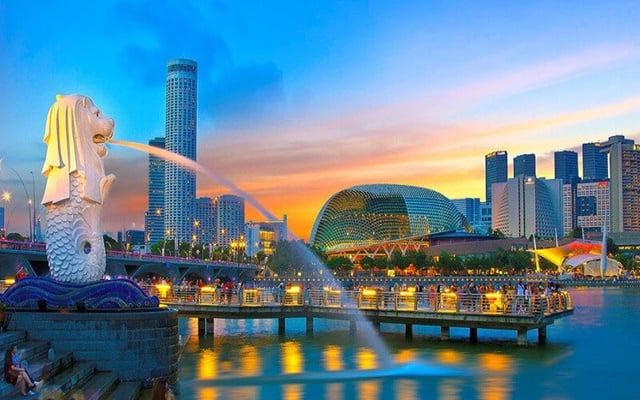

Giá từ: 12.900.000đ/người
🇸🇬 Singapore – quốc đảo xinh đẹp của Đông Nam Á – được mệnh danh là “Thành phố trong vườn”, nơi hiện đại, văn minh và thiên nhiên cùng song hành hài hòa.
Đặt chân đến Singapore, bạn sẽ choáng ngợp trước một thành phố tuy nhỏ bé nhưng vô cùng quy củ, sạch sẽ và tràn đầy sức sống.
Buổi sáng, hành trình bắt đầu tại Merlion Park – công viên sư tử biển, biểu tượng nổi tiếng của quốc gia này. Từ đây, bạn có thể phóng tầm mắt ra vịnh Marina Bay lấp lánh ánh nắng và chiêm ngưỡng tòa nhà Marina Bay Sands cao chót vót soi bóng xuống mặt nước.
Buổi trưa, tham quan Gardens by the Bay – khu vườn nhân tạo nổi tiếng với những “siêu cây” khổng lồ rực rỡ ánh đèn về đêm, cùng khu nhà kính Flower Dome – nơi quy tụ hàng ngàn loài hoa đến từ khắp nơi trên thế giới.
Buổi chiều, khám phá đảo Sentosa – thiên đường vui chơi giải trí của Singapore. Tại đây, bạn có thể ngắm toàn cảnh biển Nam Singapore từ cáp treo trên cao, tham gia các trò chơi cảm giác mạnh tại Universal Studios hoặc thư giãn trên bãi biển Siloso đầy nắng vàng.
Khi đêm xuống, ánh đèn của thành phố lung linh phản chiếu lên mặt vịnh Marina, kết hợp cùng âm nhạc và nước nhảy tại show “Spectra Light & Water Show” tạo nên khung cảnh huyền ảo như mơ.
Singapore không chỉ là một điểm đến du lịch, mà còn là hành trình khám phá nền văn minh hiện đại, sự sáng tạo không ngừng và tinh thần xanh – sạch – đẹp đáng ngưỡng mộ.